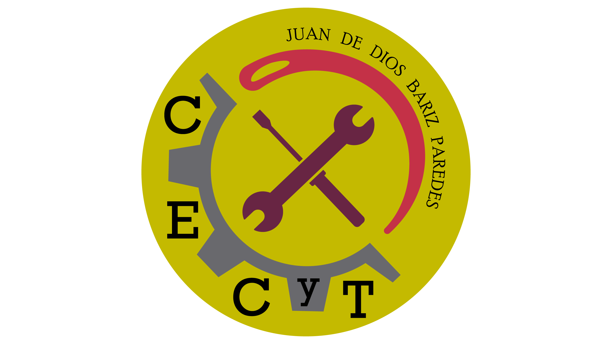

<mat-toolbar color="primary" class="content">
    <span class="logo"></span>
    <span class="spacer"></span>
    <button mat-icon-button [matMenuTriggerFor]="menu">
        <mat-icon>more_vert</mat-icon>
    </button>
</mat-toolbar>
    <mat-menu #menu="matMenu">
    <button mat-menu-item (click)="logOut()">
        <mat-icon>dialpad</mat-icon>
        <span>Cerrar Sesion</span>
    </button>
    <button mat-menu-item disabled>
        <mat-icon>notifications_off</mat-icon>
        <span>Notificaciones</span>
    </button>
    </mat-menu>